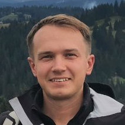

Main
Howdy!
I am an all-round Computer Science enthusiast guided by a pursuit of building high-quality digital tools with sizable real-world applications.
To that end, I maintain an academic lifestyle with a focus on both teaching and research, while keeping at least one foot in the industry. My research interests include, but are not limited to, programming language design and implementation, distributed systems, formal methods, and software engineering.
I am an avid programmer, a passionate teacher, and an Open Source enthusiast.
I was born in 1990 in Kyiv, Ukraine, but have been living in Scandinavia (Denmark and Norway) since the age of 10. I tend to surprise people with my affluent Danish and Ukrainian at no expense of my English skills.